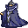

Vacor¶Where to find Vacor: Fallhaven: Fallhaven south-west
{ .sprite }
| Type | NPC/Enemy (can be spoken to, but can also be fought) |
| Role | Starts Missing pieces |
| Found in | Fallhaven |
| Class | Humanoid |
| HP | 72 |
| XP when defeated | 111 |
| Entry ID | vacor |
| Introduced | v0.7.0 or earlier |
Can be fought
This entry can be talked to, but it can also become an opponent: a conversation with this character can end in combat (a dialogue branch leads to a fight).
Combat statistics¶
| Statistic | Value |
|---|---|
| Class | Humanoid |
| HP | 72 |
| XP when defeated | 111 |
| Damage | 4 to 8 |
| Attack chance | 110 |
| Block chance | 40 |
| Damage resistance | 2 |
| Max AP | 10 |
| Attack cost | 5 AP |
| Attacks per turn | 2 |
| Move cost | 10 AP |
| Critical skill | 0 |
| Critical multiplier | – |
| Critical hit chance | None (requires both critical skill and a critical multiplier) |
Verified against v0.8.18 monster data and game code (`MonsterTypeParser.java`).
Drops¶
| Item | Chance | Qty |
|---|---|---|
| Gold coins | 100% | 16 to 30 |
| Regular potion of health | 100% | 1 |
| Vacor's ring | 100% | 1 |
| Vacor's boots of attack | 100% | 1 |
Locations¶
| Map | Region | Up to | Notes |
|---|---|---|---|
| Fallhaven south-west | Fallhaven | 1 | – |
Quests¶
- Missing pieces: stages 10, 20, 30, 40, 54, 60
- Old friends?: stages 70, 75, 90
Dialogue simulator¶
Set your quest stages and items, then talk to Vacor. Same rules as the game: same checks, same options, same effects.
Rules verified against v0.8.18 game code (ConversationController.java) and dialogue data.
Dialogue (68 lines)
Exactly as in the game files. Each line appears once; links jump to where a choice leads.
vacor (silent check: the first matching branch below is taken)
- branch 1 (if reached stage 60 of Missing pieces) → vacor_return_complete0
- branch 2 (if reached stage 40 of Missing pieces) → vacor_return2
- branch 3 (if reached stage 30 of Missing pieces) → vacor_42
- branch 4 → vacor_select1
vacor_return_complete0 (silent check: the first matching branch below is taken)
- branch 1 (if reached stage 90 of Old friends?) → vacor_msg_16
- branch 2 (if reached stage 75 of Old friends?) → vacor_msg_9
- branch 3 (if reached stage 60 of Old friends?; carry 1× Kaverin's sealed message) → vacor_msg1
- branch 4 → vacor_return_complete
vacor_return2 Vacor: “Hello again. Any progress yet?”
- “About Unzel...” → vacor_return2_2
- “Could you tell me the story again?” → vacor_43
vacor_42 Vacor: “Now I should be able to finish the rift spell and open up the Shadow rift ... erm I mean open up new possibilities. Yes, that's what I meant.”
- Next → vacor_43
vacor_select1 (silent check: the first matching branch below is taken)
- branch 1 (if reached stage 20 of Missing pieces) → vacor_return1
- branch 2 → vacor_begin
vacor_msg_16 Vacor: “Thanks for giving me that message, but now please leave me. I have more important things to do than to talk to you.”
vacor_msg_9 Vacor: “It will lead you far to the southwest, to one of my secret retreats ... where a cache of potions is hidden.”
- Next → vacor_msg_10
vacor_msg1 Vacor: “What's that in your hands?! ... I recognize that seal!” — effects: sets stage 70 of Old friends?
- “You should recognize it, I found this on one of Unzel's associates in Remgard.” → vacor_msg_a1
- “What? ... Oh, this?” → vacor_msg_b1
vacor_return_complete Vacor: “Hello again, my assassin friend. I will soon have my rift spell ready.”
vacor_return2_2 Vacor: “Have you killed Unzel for me yet? Bring me his signet ring when you have killed him.”
- “I have dealt with him. Here is his ring.” (if hand over 1× Unzel's ring) → vacor_60
- “I listened to Unzel's story and have decided to side with him. The Shadow must be preserved.” (if reached stage 51 of Missing pieces) → vacor_70
vacor_43 Vacor: “The only obstacle between me and continuing my rift spell research is that stupid Unzel fellow.”
- Next → vacor_44
vacor_return1 Vacor: “Hello again. How is the search for my missing pieces of the rift spell going?”
- “I have found all the pieces.” (if hand over 4× Piece of Vacor's spell) → vacor_40
- “What was I supposed to do again?” → vacor_18
- “Could you tell me the whole story again?” → vacor_4
vacor_begin Vacor: “Hello.”
- Next → vacor_2
vacor_msg_10 Vacor: “[The map shows a location to the northwest of the former prison of Flagstone]” — effects: sets stage 90 of Old friends?
- Next → vacor_msg_11
vacor_msg_a1 Vacor: “Surely, he didn't just give it to you!”
- “He was asking too many questions. He needed to be silenced.” → vacor_msg_a2
vacor_msg_b1 Vacor: “How did you get your hands on that document?!”
- “A man in Remgard, by the name of Kaverin, was asking about Unzel...” → vacor_msg_b2
vacor_60 Vacor: “Ha ha, Unzel is dead! That pathetic creature is gone!” — effects: sets stage 60 of Missing pieces
- Next → vacor_61
vacor_70 Vacor: “What? He told you his story? You actually believed it?”
- Next → vacor_71
vacor_44 Vacor: “Unzel was my apprentice a while ago. But he started to annoy me with his questions and talk about morality.”
- Next → vacor_45
vacor_40 Vacor: “Oh, you found all four pieces? Hurry, give them to me.” — effects: sets stage 30 of Missing pieces
- Next → vacor_41
vacor_18 Vacor: “OK, find the four pieces of my rift spell that the bandits took, and bring the pieces to me.” — effects: sets stage 20 of Missing pieces
- Next → vacor_19
vacor_4 Vacor: “A while ago, I was working on a rift spell that I had read about.”
- Next → vacor_5
vacor_2 Vacor: “What are you, some kind of adventurer? Hmm. Maybe you can be of use to me.”
- Next → vacor_3
vacor_msg_11 Vacor: “Now, let's see here.”
- Next → vacor_msg_12
vacor_msg_a2 Vacor: “So, you killed him? Right?!”
- “Kaverin is dead. His blood is still on my boots.” → vacor_msg_3
vacor_msg_b2 Vacor: “What happened boy?!”
- “Kaverin is dead. His blood is still on my boots.” → vacor_msg_3
vacor_61 Vacor: “I can see the blood on your boots. I even got you to kill his minions beforehand.”
- Next → vacor_62
vacor_71 Vacor: “I will give you one more chance. Either kill Unzel for me, and I will reward you handsomely, or you will have to fight me.”
- “No. You must be stopped.” → vacor_72
- “OK, I'll think about it once more.” → conversation ends
vacor_45 Vacor: “He said that my spell making was disrupting the will of the Shadow.”
- Next → vacor_46
vacor_41 Vacor: “Yes, these are the pieces that the bandits took.”
- Next → vacor_42
vacor_19 Vacor: “There were four bandits, and they all headed south of Fallhaven after I was attacked.”
- Next → vacor_20
vacor_5 Vacor: “The spell is supposed to, shall we say, open up new possibilities.”
- Next → vacor_6
vacor_3 Vacor: “Are you willing to help me?”
vacor_msg_12 Vacor: “[Vacor opens the sealed message and starts reading]”
- Next → vacor_msg_13
vacor_msg_3 Vacor: “Good, maybe now I can work on my Rift Spell in peace...”
- Next → vacor_msg_4
vacor_62 Vacor: “This is a great day indeed. I will soon have the power!”
- Next → vacor_63
vacor_72 Vacor: “Bah, lowly creature. I knew I shouldn't have trusted you. Now you will die along with your precious Shadow.” — effects: sets stage 54 of Missing pieces
- “For the Shadow!” → fight starts
- “You must be stopped.” → fight starts
vacor_46 Vacor: “Bah, the Shadow. What has it ever done for ME?!”
- Next → vacor_47
vacor_20 Vacor: “You should search the southern parts of Fallhaven for the four bandits.”
- Next → vacor_21
vacor_6 Vacor: “Erm, yes, the rift spell will open things up alright. Ahem.”
- Next → vacor_7
vacor_bah Vacor: “Bah, lowly creature. I knew I shouldn't have asked you. Now leave me.”
vacor_msg_13 Vacor: “Yes ... hmm ... really?! mumbles ...yes, indeed...”
- Next → vacor_msg_14
vacor_msg_4 Vacor: “I must have that document!”
- Next → vacor_msg_5
vacor_63 Vacor: “Here, have these coins for your help.” — effects: gives Gold coins
- Next → vacor_64
vacor_47 Vacor: “I shall one day cast my rift spell and we will be rid of the Shadow.”
- Next → vacor_48
vacor_21 Vacor: “Please hurry! I am so eager to open up the rift ... erm, I mean finish the spell. Nothing odd with that right?”
vacor_7 Vacor: “So there I was working hard on getting the last pieces together for it.”
- Next → vacor_8
vacor_msg_14 Vacor: “Thanks kid, you have helped me more than you can possibly understand.”
- Next → vacor_msg_15
vacor_msg_5 Vacor: “I must know what they are planning!”
- “Here, have the message.” (if hand over 1× Kaverin's sealed message) → vacor_msg_8
- “What's in it for me?” → vacor_msg_6
vacor_64 Vacor: “Now leave me, I have work to do before I can cast the rift spell.”
vacor_48 Vacor: “Anyway. I have a feeling that Unzel sent those bandits after me, and if I don't stop him he will probably send more.”
- Next → vacor_49
vacor_8 Vacor: “Then, all of a sudden, a gang of thugs came around and started bullying me.”
- Next → vacor_9
vacor_msg_15 Vacor: “HA HA HA!!! THE POWER WILL SOON BE MINE!”
- “Excellent! The Shadow must be stopped!” → vacor_msg_16
- “I just wanted a reward... Weirdo.” → vacor_msg_16
vacor_msg_8 Vacor: “Here, take this map as compensation for your troubles.” — effects: gives Map to Vacor's old hideout, sets stage 75 of Old friends?
- Next → vacor_msg_9
vacor_msg_6 Vacor: “I have a cache of potions hidden, far to the southwest.”
- “Excellent, I could always use more supplies.” → vacor_msg_7
vacor_49 Vacor: “I need you to find Unzel and kill him for me. He can probably be found somewhere southwest of Fallhaven.” — effects: sets stage 40 of Missing pieces
- Next → vacor_50
vacor_9 Vacor: “They said they were Messengers of the Shadow, and insisted that I should cease my spell making.”
- Next → vacor_10
vacor_msg_7 Vacor: “Good. Now give me the message.”
- “Here is the message, Vacor.” (if hand over 1× Kaverin's sealed message) → vacor_msg_8
vacor_50 Vacor: “Bring me his signet ring as proof when you have killed him.”
- Next → vacor_51
vacor_10 Vacor: “Preposterous, isn't it? I was so close to having the power!”
- Next → vacor_11
vacor_51 Vacor: “Now hurry, I cannot wait much longer. The power shall be MINE!”
vacor_11 Vacor: “Oh, the power I could have had. My dear rift spell.” — effects: sets stage 10 of Missing pieces
- Next → vacor_12
vacor_12 Vacor: “Anyway, I was just about to finish the last piece of my rift spell when the bandits came and robbed me.”
- Next → vacor_13
vacor_13 Vacor: “The bandits took my notes for the spell and took off before I could call the guards.”
- Next → vacor_14
vacor_14 Vacor: “After years of work, I can't seem to remember the last parts of the spell.”
- Next → vacor_15
vacor_15 Vacor: “Do you think you could help me locate it? Then I could have the power at last!”
- Next → vacor_16
vacor_16 Vacor: “You will of course be suitably rewarded for your part in me getting this power.”
- “A reward? I'm in!” → vacor_17
- “Very well. I will help you.” → vacor_17
- “No thanks, this seems like something that I would rather not get involved with.” → vacor_bah
vacor_17 Vacor: “I knew I couldn't trust... Wait, what? You actually said yes? Hah, well then.”
- Next → vacor_18
Version history¶
| Version | Change |
|---|---|
| v0.7.0 | Present in v0.7.0 (earliest release tracked) |
| v0.7.2 | Dialogue: 14 lines changed · text: “Ok, find the four pieces of my rift spell that the bandits took, and …” → “OK, find the four pieces of my rift spell that the bandits took, and …” · text: “(Vacor opens the sealed message and starts reading)” → “[Vacor opens the sealed message and starts reading]” |
Verified against v0.8.18 and every earlier release back to v0.7.0 (game data compared release by release).
Technical information
| Entry ID | vacor |
| Spawn group | vacor |
| Loot table | vacor |
| Conversation | vacor |
| Faction | – |
| Movement | – |
| Icon | monsters_mage:0 |
| Defined in | res/raw/monsterlist_fallhaven_npcs.json |
Raw data:
{
"id": "vacor",
"name": "Vacor",
"iconID": "monsters_mage:0",
"maxHP": 72,
"unique": 1,
"monsterClass": "humanoid",
"attackDamage": {
"min": 4,
"max": 8
},
"spawnGroup": "vacor",
"phraseID": "vacor",
"droplistID": "vacor",
"attackCost": 5,
"attackChance": 110,
"blockChance": 40,
"damageResistance": 2
}
How the XP value is calculated
The game computes each enemy's experience value when it loads the data (MonsterTypeParser.java):
XP = ⌈(attacks per turn × attack chance × average damage × (1 + critical skill × critical multiplier) × 3 + HP × (1 + block chance) + 9 × damage resistance) × 0.7⌉
Percentages are used as fractions (e.g. 60% = 0.6). Enemies whose attacks inflict a condition are worth 50 XP more. The More Exp skill adds a percentage on top.
Community notes¶
Written by players, not generated from game data. Observations: what players notice in-game · Lore: the in-world story · Trivia: real-world facts, references, development history · Theory / speculation: unconfirmed ideas; may just be unfinished content
Observations¶
No notes yet. Contributions are welcome: add a note.
Lore¶
No notes yet. Contributions are welcome: add a note.
Trivia¶
No notes yet. Contributions are welcome: add a note.
Theory / speculation¶
No notes yet. Contributions are welcome: add a note.
Data from v0.8.18